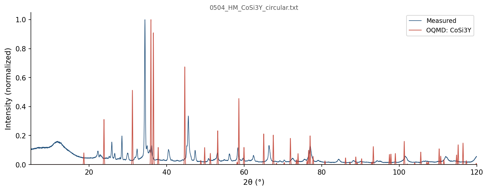

| Element | Expected (mol frac) | Measured (mol frac) | Δ (mol frac) | Δ (%) |
|---|---|---|---|---|
| Co | 0.2000 | 0.1065 | -0.0935 | -9.35% |
| Si | 0.6000 | 0.6703 | +0.0703 | +7.03% |
| Y | 0.2000 | 0.2232 | +0.0232 | +2.32% |
369 OQMD entries in the Co-Si-Y element system (25 on hull, 101 ICSD-tagged). OQMD: negative = below hull (stable). Sorted most stable first.
| Composition | Stability (meV/atom) | ΔE (meV/atom) | ICSD | Space | Entry | CIF |
|---|---|---|---|---|---|---|
Co1Si1 |
-138 | -624.3 | ✓ | Co-Si | 3604 | CIF |
Co2Si2Y1 |
-92 | -833.6 | ✓ | Co-Si-Y | 647098 | CIF |
Si1Y1 |
-88 | -853.1 | Si-Y | 1338441 | CIF | |
Si3Y5 |
-67 | -721.0 | ✓ | Si-Y | 8194 | CIF |
Co1Si2 |
-59 | -474.8 | ✓ | Co-Si | 5256 | CIF |
Co1Si1Y1 |
-43 | -756.7 | Co-Si-Y | 1368530 | CIF | |
Co2Si1 |
-28 | -464.7 | ✓ | Co-Si | 646168 | CIF |
Si5Y3 |
-25 | -694.0 | Si-Y | 2132119 | CIF | |
Co17Y2 |
-22 | -109.8 | ✓ | Co-Y | 29527 | CIF |
Co6Si4Y1 |
-19 | -651.1 | Co-Si-Y | 2149267 | CIF | |
Co3Si5Y2 |
-18 | -776.7 | ✓ | Co-Si-Y | 29489 | CIF |
Co1Si3Y1 |
-17 | -665.9 | Co-Si-Y | 1475971 | CIF | |
Co3Si2Y1 |
-11 | -708.8 | Co-Si-Y | 1366590 | CIF | |
Co1Y3 |
-8 | -152.1 | ✓ | Co-Y | 664091 | CIF |
Co1Y1 |
-7 | -204.8 | ✓ | Co-Y | 21457 | CIF |
Co9Si5Y4 |
-6 | -640.8 | Co-Si-Y | 1800397 | CIF | |
Co8Y3 |
-6 | -182.8 | Co-Y | 2135323 | CIF | |
Co2Y5 |
-5 | -164.9 | Co-Y | 1982042 | CIF | |
Co1Si2Y1 |
-3 | -791.9 | ✓ | Co-Si-Y | 29490 | CIF |
Co5Y4 |
-1 | -204.3 | Co-Y | 2131767 | CIF | |
Co1 |
+0 | -16.9 | ✓ | Co | 637416 | CIF |
Si1 |
+0 | 0.0 | ✓ | Si | 5714 | CIF |
Y1 |
+0 | 0.0 | Y | 1215387 | CIF | |
Y1 |
+0 | 0.0 | ✓ | Y | 2015273 | CIF |
Y1 |
+0 | 0.0 | ✓ | Y | 2030142 | CIF |
Si1 |
+0 | 0.0 | Si | 1215550 | CIF | |
Si1 |
+0 | 0.0 | ✓ | Si | 12378 | CIF |
Co3Y1 |
+0 | -172.8 | ✓ | Co-Y | 19658 | CIF |
Co9Si5Y4 |
+0 | -640.7 | Co-Si-Y | 2158181 | CIF | |
Y1 |
+0 | 0.1 | ✓ | Y | 51193 | CIF |
Co6Y5 |
+0 | -204.3 | Co-Y | 2135326 | CIF | |
Si1 |
+0 | 0.1 | Si | 1880654 | CIF | |
Co2Y5 |
+0 | -164.5 | Co-Y | 1437112 | CIF | |
Co3Y2 |
+0 | -198.3 | Co-Y | 1366024 | CIF | |
Y1 |
+1 | 0.7 | ✓ | Y | 8147 | CIF |
Si1Y1 |
+1 | -852.4 | ✓ | Si-Y | 7939 | CIF |
Co1Si2Y1 |
+1 | -791.0 | Co-Si-Y | 1901607 | CIF | |
Co23Y6 |
+1 | -153.0 | Co-Y | 2136586 | CIF | |
Si11Y8 |
+1 | -751.2 | Si-Y | 1437931 | CIF | |
Co2Si1Y1 |
+2 | -598.0 | Co-Si-Y | 1374407 | CIF | |
Co2Y1 |
+2 | -188.7 | ✓ | Co-Y | 19394 | CIF |
Y1 |
+2 | 2.2 | Y | 1216103 | CIF | |
Co1Y1 |
+2 | -202.5 | ✓ | Co-Y | 4021 | CIF |
Co17Y2 |
+4 | -106.1 | Co-Y | 1280562 | CIF | |
Co3Si5Y2 |
+4 | -772.9 | ✓ | Co-Si-Y | 11345 | CIF |
Co3Si7Y3 |
+5 | -739.3 | Co-Si-Y | 2151698 | CIF | |
Y1 |
+5 | 4.6 | ✓ | Y | 83105 | CIF |
Y1 |
+6 | 5.6 | Y | 1215298 | CIF | |
Y1 |
+7 | 6.8 | Y | 1215477 | CIF | |
Co1Si3Y1 |
+8 | -658.4 | Co-Si-Y | 1365767 | CIF | |
Co1Si3Y1 |
+8 | -658.1 | Co-Si-Y | 1799027 | CIF | |
Co1Si3Y3 |
+8 | -803.3 | Co-Si-Y | 1454283 | CIF | |
Co3Si1 |
+10 | -343.1 | ✓ | Co-Si | 2034705 | CIF |
Co2Y3 |
+11 | -175.4 | ✓ | Co-Y | 1983 | CIF |
Si1 |
+11 | 11.2 | ✓ | Si | 5764 | CIF |
Si1 |
+11 | 11.4 | ✓ | Si | 22507 | CIF |
Si5Y3 |
+13 | -680.8 | Si-Y | 1795316 | CIF | |
Co2Y1 |
+15 | -175.0 | Co-Y | 1800971 | CIF | |
Co12Y1 |
+16 | -69.2 | Co-Y | 1797295 | CIF | |
Co1 |
+17 | 0.0 | ✓ | Co | 594128 | CIF |
Co9Si4Y1 |
+19 | -496.7 | ✓ | Co-Si-Y | 2053341 | CIF |
Co1 |
+19 | 2.2 | ✓ | Co | 2030128 | CIF |
Si4Y5 |
+20 | -774.0 | ✓ | Si-Y | 643385 | CIF |
Co5Y1 |
+22 | -114.9 | Co-Y | 1435583 | CIF | |
Co5Y1 |
+22 | -114.7 | Co-Y | 1454694 | CIF | |
Si4Y5 |
+23 | -771.1 | Si-Y | 1339405 | CIF | |
Y1 |
+24 | 24.1 | Y | 1214586 | CIF | |
Y1 |
+24 | 24.3 | ✓ | Y | 685034 | CIF |
Y1 |
+25 | 25.2 | Y | 1215922 | CIF | |
Co2Y1 |
+26 | -164.8 | Co-Y | 1591034 | CIF | |
Y1 |
+26 | 26.0 | Y | 1215744 | CIF | |
Co1 |
+26 | 9.5 | ✓ | Co | 592630 | CIF |
Co1Si2 |
+29 | -445.9 | Co-Si | 1795007 | CIF | |
Si3Y4 |
+30 | -747.3 | Si-Y | 1479276 | CIF | |
Si1 |
+30 | 30.4 | ✓ | Si | 2032708 | CIF |
Y1 |
+30 | 30.4 | ✓ | Y | 2037981 | CIF |
Co1Si1Y1 |
+31 | -725.4 | Co-Si-Y | 1470165 | CIF | |
Co1Si1Y1 |
+32 | -724.5 | Co-Si-Y | 1444920 | CIF | |
Si4Y3 |
+32 | -729.7 | Si-Y | 1484261 | CIF | |
Y1 |
+34 | 33.7 | Y | 1214675 | CIF | |
Y1 |
+34 | 34.2 | Y | 1215833 | CIF | |
Co1Y8 |
+38 | -29.2 | Co-Y | 1519484 | CIF | |
Co1 |
+39 | 22.3 | Co | 1485028 | CIF | |
Si1 |
+39 | 39.4 | ✓ | Si | 2032709 | CIF |
Co1Si64 |
+40 | 17.8 | ✓ | Co-Si | 2065304 | CIF |
Co1Si64 |
+44 | 22.1 | ✓ | Co-Si | 2065300 | CIF |
Si1Y3 |
+44 | -436.5 | Si-Y | 1437329 | CIF | |
Co1Si1Y2 |
+44 | -541.3 | Co-Si-Y | 1560097 | CIF | |
Co1 |
+48 | 31.0 | Co | 1214873 | CIF | |
Si1 |
+49 | 48.6 | ✓ | Si | 2031443 | CIF |
Si3Y5 |
+50 | -670.9 | Si-Y | 1800716 | CIF | |
Si1 |
+52 | 52.3 | Si | 717362 | CIF | |
Si1 |
+55 | 55.3 | ✓ | Si | 2059274 | CIF |
Co3Y1 |
+57 | -115.7 | ✓ | Co-Y | 29526 | CIF |
Co2Si3 |
+61 | -473.8 | Co-Si | 1450801 | CIF | |
Co1 |
+61 | 44.1 | ✓ | Co | 592136 | CIF |
Si1 |
+62 | 62.1 | ✓ | Si | 2032707 | CIF |
Si1 |
+63 | 62.7 | ✓ | Si | 2046276 | CIF |
Si1 |
+63 | 62.7 | Si | 717360 | CIF | |
Y1 |
+65 | 64.6 | ✓ | Y | 2031514 | CIF |
Co1 |
+66 | 49.3 | Co | 1577561 | CIF | |
Si1 |
+67 | 67.4 | ✓ | Si | 2032710 | CIF |
Co3Si1 |
+68 | -284.4 | ✓ | Co-Si | 2026296 | CIF |
Si1 |
+69 | 69.1 | ✓ | Si | 2031149 | CIF |
Si1 |
+69 | 69.2 | ✓ | Si | 22408 | CIF |
Co3Si1 |
+72 | -280.7 | Co-Si | 1796221 | CIF | |
Co3Y5 |
+73 | -108.9 | Co-Y | 1799852 | CIF | |
Co1Y2 |
+73 | -100.4 | Co-Y | 1449897 | CIF | |
Co2Si1 |
+74 | -390.4 | Co-Si | 1793727 | CIF | |
Si2Y1 |
+75 | -542.0 | ✓ | Si-Y | 19375 | CIF |
Si2Y1 |
+75 | -541.8 | ✓ | Si-Y | 2028763 | CIF |
Co1 |
+76 | 58.7 | Co | 1489243 | CIF | |
Si1Y2 |
+79 | -562.1 | Si-Y | 1521255 | CIF | |
Si1 |
+80 | 79.7 | ✓ | Si | 2046573 | CIF |
Si1 |
+80 | 80.1 | ✓ | Si | 2031150 | CIF |
Si1 |
+81 | 81.2 | ✓ | Si | 2029575 | CIF |
Co7Y2 |
+81 | -79.3 | ✓ | Co-Y | 664090 | CIF |
Co4Si5 |
+82 | -492.9 | Co-Si | 1800380 | CIF | |
Co9Si2Y1 |
+83 | -280.2 | ✓ | Co-Si-Y | 29488 | CIF |
Co1Y1 |
+85 | -120.3 | Co-Y | 1219840 | CIF | |
Co1Y1 |
+85 | -120.0 | Co-Y | 306905 | CIF | |
Co2Si1 |
+85 | -379.3 | Co-Si | 1277167 | CIF | |
Co3Si1 |
+86 | -267.1 | Co-Si | 302429 | CIF | |
Co4Si6Y1 |
+87 | -565.6 | Co-Si-Y | 1959810 | CIF | |
Co3Si1 |
+89 | -263.9 | Co-Si | 1821353 | CIF | |
Si1 |
+89 | 89.0 | ✓ | Si | 2029571 | CIF |
Co3Si1 |
+89 | -263.5 | Co-Si | 321869 | CIF | |
Y1 |
+89 | 89.4 | Y | 1520191 | CIF | |
Co3Si1 |
+90 | -262.7 | Co-Si | 312971 | CIF | |
Co3Si1 |
+90 | -262.6 | Co-Si | 346355 | CIF | |
Si2Y1 |
+90 | -526.6 | ✓ | Si-Y | 2029173 | CIF |
Si2Y1 |
+90 | -526.6 | ✓ | Si-Y | 670808 | CIF |
Si1 |
+90 | 90.3 | ✓ | Si | 2021436 | CIF |
Si2Y1 |
+90 | -526.5 | ✓ | Si-Y | 670814 | CIF |
Si2Y1 |
+90 | -526.4 | ✓ | Si-Y | 646926 | CIF |
Co2Y3 |
+91 | -94.9 | Co-Y | 426569 | CIF | |
Co1Si3 |
+93 | -263.4 | Co-Si | 1799577 | CIF | |
Si1Y2 |
+95 | -545.7 | Si-Y | 1436079 | CIF | |
Co1Si4 |
+96 | -188.9 | Co-Si | 1437891 | CIF | |
Si1 |
+96 | 96.3 | ✓ | Si | 2046575 | CIF |
Si1 |
+101 | 101.0 | ✓ | Si | 22407 | CIF |
Co1Si1Y1 |
+102 | -654.8 | Co-Si-Y | 1447194 | CIF | |
Co1Si1Y1 |
+102 | -654.5 | Co-Si-Y | 1447925 | CIF | |
Co1 |
+103 | 85.7 | ✓ | Co | 594127 | CIF |
Co1 |
+103 | 85.9 | Co | 1215853 | CIF | |
Co1 |
+103 | 86.5 | Co | 1280314 | CIF | |
Co1 |
+104 | 86.7 | ✓ | Co | 2031488 | CIF |
Co2Si1 |
+104 | -361.0 | Co-Si | 1344034 | CIF | |
Co2Si1 |
+104 | -360.3 | Co-Si | 1473821 | CIF | |
Co1Si1Y1 |
+110 | -646.8 | Co-Si-Y | 1448661 | CIF | |
Si1 |
+110 | 110.2 | ✓ | Si | 2046572 | CIF |
Si3Y1 |
+110 | -352.4 | ✓ | Si-Y | 2022951 | CIF |
Co1 |
+111 | 94.0 | Co | 1790951 | CIF | |
Si1 |
+113 | 113.1 | ✓ | Si | 2032923 | CIF |
Co1 |
+115 | 97.8 | ✓ | Co | 2030127 | CIF |
Si2Y1 |
+115 | -501.9 | Si-Y | 1435800 | CIF | |
Co1 |
+115 | 98.4 | Co | 1791473 | CIF | |
Co1 |
+116 | 99.2 | Co | 1908163 | CIF | |
Co1 |
+118 | 101.0 | Co | 1522296 | CIF | |
Y1 |
+119 | 118.6 | ✓ | Y | 2030141 | CIF |
Y1 |
+119 | 118.7 | ✓ | Y | 2037980 | CIF |
Co4Si4Y3 |
+124 | -667.6 | Co-Si-Y | 1797050 | CIF | |
Y1 |
+127 | 126.7 | Y | 1215209 | CIF | |
Y1 |
+127 | 126.8 | Y | 1522303 | CIF | |
Co1 |
+129 | 111.8 | ✓ | Co | 631034 | CIF |
Si1 |
+129 | 128.7 | ✓ | Si | 2059273 | CIF |
Si1 |
+131 | 131.3 | ✓ | Si | 2029573 | CIF |
Co3Y1 |
+132 | -40.6 | Co-Y | 1788158 | CIF | |
Co1 |
+133 | 116.4 | Co | 1477104 | CIF | |
Co1Si1 |
+135 | -489.3 | Co-Si | 1793594 | CIF | |
Co1 |
+140 | 122.8 | Co | 1972145 | CIF | |
Co5Y1 |
+141 | 4.2 | ✓ | Co-Y | 18297 | CIF |
Si2Y1 |
+143 | -473.3 | Si-Y | 1339151 | CIF | |
Si1 |
+145 | 145.2 | ✓ | Si | 2046574 | CIF |
Co1Y1 |
+148 | -56.6 | Co-Y | 338447 | CIF | |
Si1 |
+158 | 158.2 | ✓ | Si | 3484 | CIF |
Si1 |
+161 | 160.5 | ✓ | Si | 18985 | CIF |
Co1Si1Y1 |
+171 | -585.9 | Co-Si-Y | 1445640 | CIF | |
Co1Si1Y1 |
+172 | -584.3 | Co-Si-Y | 1446442 | CIF | |
Si1 |
+173 | 173.1 | ✓ | Si | 2032012 | CIF |
Y1 |
+178 | 177.6 | Y | 1214942 | CIF | |
Si1 |
+179 | 178.6 | ✓ | Si | 2059275 | CIF |
Co1Si1 |
+181 | -443.6 | Co-Si | 1790921 | CIF | |
Co17Y2 |
+182 | 72.4 | ✓ | Co-Y | 29529 | CIF |
Co1 |
+184 | 167.3 | Co | 2069777 | CIF | |
Co1 |
+187 | 170.2 | Co | 1485781 | CIF | |
Y1 |
+189 | 188.6 | Y | 1214853 | CIF | |
Co1 |
+192 | 175.1 | Co | 2066502 | CIF | |
Co1 |
+193 | 175.8 | Co | 2069795 | CIF | |
Co1 |
+193 | 175.8 | Co | 2069798 | CIF | |
Co1 |
+193 | 175.8 | Co | 2069801 | CIF | |
Co1 |
+193 | 175.8 | Co | 2069804 | CIF | |
Co1 |
+193 | 175.8 | Co | 2069819 | CIF | |
Co1 |
+193 | 175.8 | Co | 2069822 | CIF | |
Co1 |
+193 | 175.8 | Co | 2069792 | CIF | |
Co1 |
+193 | 175.8 | Co | 2069810 | CIF | |
Co1 |
+193 | 175.8 | Co | 2069816 | CIF | |
Co1 |
+193 | 175.8 | Co | 2069825 | CIF | |
Co1 |
+193 | 175.8 | Co | 2069813 | CIF | |
Co1 |
+193 | 175.8 | Co | 2069789 | CIF | |
Co1 |
+193 | 175.8 | Co | 2069807 | CIF | |
Co1 |
+194 | 176.7 | Co | 1972143 | CIF | |
Y1 |
+198 | 198.2 | Y | 1214764 | CIF | |
Y1 |
+199 | 199.4 | Y | 1215120 | CIF | |
Co1 |
+199 | 182.6 | Co | 1487127 | CIF | |
Co2Si3 |
+201 | -333.4 | ✓ | Co-Si | 29477 | CIF |
Co1 |
+201 | 184.6 | Co | 2069765 | CIF | |
Co1 |
+202 | 185.3 | Co | 2069759 | CIF | |
Si5Y1 |
+206 | -102.8 | Si-Y | 1794799 | CIF | |
Co1 |
+206 | 189.4 | Co | 2069783 | CIF | |
Co1 |
+206 | 189.4 | Co | 2069750 | CIF | |
Co1 |
+206 | 189.4 | Co | 2069786 | CIF | |
Co1 |
+206 | 189.4 | Co | 2069771 | CIF | |
Co1 |
+206 | 189.4 | Co | 2069753 | CIF | |
Co1 |
+206 | 189.4 | Co | 2069780 | CIF | |
Co1 |
+206 | 189.4 | Co | 2069762 | CIF | |
Co1 |
+206 | 189.4 | Co | 2069774 | CIF | |
Co1 |
+206 | 189.4 | Co | 2069756 | CIF | |
Co1 |
+207 | 189.7 | Co | 2066493 | CIF | |
Co1Si1 |
+207 | -417.4 | Co-Si | 306899 | CIF | |
Co1 |
+208 | 191.2 | Co | 2069717 | CIF | |
Co1 |
+209 | 191.7 | Co | 2069732 | CIF | |
Co1Si1 |
+210 | -414.4 | ✓ | Co-Si | 19979 | CIF |
Co1Si1 |
+211 | -413.3 | Co-Si | 1219825 | CIF | |
Co1 |
+212 | 195.2 | Co | 1214517 | CIF | |
Co1 |
+212 | 195.3 | Co | 1215675 | CIF | |
Co1 |
+216 | 199.4 | Co | 2069711 | CIF | |
Co1 |
+217 | 200.4 | Co | 1485147 | CIF | |
Co1 |
+220 | 202.7 | Co | 2069729 | CIF | |
Si3Y1 |
+220 | -242.8 | Si-Y | 321890 | CIF | |
Co1 |
+221 | 204.5 | Co | 1215408 | CIF | |
Co1 |
+222 | 205.3 | Co | 1216031 | CIF | |
Si1 |
+222 | 222.4 | ✓ | Si | 2015703 | CIF |
Co3Y1 |
+223 | 50.5 | Co-Y | 318910 | CIF | |
Si1 |
+224 | 223.8 | ✓ | Si | 2029574 | CIF |
Co1 |
+226 | 209.0 | Co | 1215318 | CIF | |
Y1 |
+228 | 228.0 | Y | 1215031 | CIF | |
Co1Si1 |
+230 | -393.8 | Co-Si | 338441 | CIF | |
Co1 |
+231 | 214.4 | Co | 1215229 | CIF | |
Co1Si1Y2 |
+233 | -352.8 | Co-Si-Y | 411003 | CIF | |
Co1 |
+234 | 216.8 | Co | 1214606 | CIF | |
Co1 |
+238 | 220.8 | Co | 2069747 | CIF | |
Si1Y3 |
+238 | -242.3 | Si-Y | 323231 | CIF | |
Co1Si1 |
+243 | -381.3 | Co-Si | 1228990 | CIF | |
Si1Y3 |
+245 | -235.3 | Si-Y | 347717 | CIF | |
Co2Si1 |
+246 | -218.3 | Co-Si | 1415632 | CIF | |
Co1Si1 |
+252 | -372.0 | Co-Si | 327983 | CIF | |
Si1 |
+269 | 268.9 | ✓ | Si | 2029572 | CIF |
Si1Y3 |
+273 | -207.3 | Si-Y | 300806 | CIF | |
Si3Y1 |
+280 | -182.5 | Si-Y | 346376 | CIF | |
Co1 |
+284 | 267.1 | Co | 2069849 | CIF | |
Co1 |
+284 | 267.1 | Co | 2069843 | CIF | |
Co1 |
+285 | 267.7 | Co | 2069861 | CIF | |
Co1 |
+285 | 267.7 | Co | 2069864 | CIF | |
Co1 |
+285 | 267.9 | Co | 2069846 | CIF | |
Co1 |
+285 | 268.1 | Co | 2069852 | CIF | |
Co1 |
+285 | 268.1 | Co | 2069831 | CIF | |
Si1 |
+286 | 285.7 | Si | 717361 | CIF | |
Co1 |
+286 | 268.8 | Co | 2069840 | CIF | |
Co1 |
+286 | 269.2 | Co | 2069837 | CIF | |
Co1 |
+287 | 269.8 | Co | 2069858 | CIF | |
Co1 |
+287 | 269.8 | Co | 2069828 | CIF | |
Si1 |
+291 | 291.1 | ✓ | Si | 18979 | CIF |
Si1 |
+291 | 291.1 | Si | 1215639 | CIF | |
Si1 |
+292 | 292.4 | ✓ | Si | 7479 | CIF |
Co1 |
+299 | 282.0 | Co | 2066484 | CIF | |
Si1 |
+300 | 300.1 | ✓ | Si | 78173 | CIF |
Si1 |
+306 | 306.4 | Si | 1215282 | CIF | |
Si1 |
+308 | 307.9 | ✓ | Si | 18984 | CIF |
Si1 |
+308 | 308.0 | ✓ | Si | 51152 | CIF |
Si1 |
+308 | 308.3 | Si | 1215104 | CIF | |
Co2Si3 |
+313 | -221.6 | Co-Si | 426554 | CIF | |
Si2Y1 |
+317 | -299.6 | Si-Y | 1590130 | CIF | |
Co2Si1Y1 |
+320 | -279.9 | ✓ | Co-Si-Y | 2032837 | CIF |
Co2Si1Y1 |
+320 | -279.5 | Co-Si-Y | 413459 | CIF | |
Co1Y3 |
+320 | 168.1 | Co-Y | 323524 | CIF | |
Co1 |
+322 | 305.1 | Co | 1972142 | CIF | |
Si1 |
+340 | 339.6 | ✓ | Si | 10215 | CIF |
Co1 |
+342 | 324.8 | Co | 1214784 | CIF | |
Si3Y1 |
+344 | -118.2 | Si-Y | 302147 | CIF | |
Co3Y1 |
+347 | 174.6 | Co-Y | 343396 | CIF | |
Si1 |
+348 | 348.2 | Si | 1472903 | CIF | |
Si1 |
+351 | 350.6 | Si | 1215906 | CIF | |
Si1 |
+351 | 351.3 | Si | 1214659 | CIF | |
Si1 |
+351 | 351.4 | Si | 1215817 | CIF | |
Si1 |
+353 | 352.6 | ✓ | Si | 2030957 | CIF |
Co1 |
+358 | 340.7 | Co | 1215051 | CIF | |
Si1 |
+361 | 361.1 | Si | 1214748 | CIF | |
Co1 |
+365 | 348.1 | Co | 1972141 | CIF | |
Si1Y1 |
+371 | -482.2 | Si-Y | 338305 | CIF | |
Si1Y1 |
+383 | -470.2 | Si-Y | 1105948 | CIF | |
Si1Y1 |
+384 | -468.9 | Si-Y | 1235113 | CIF | |
Co3Y1 |
+387 | 213.7 | Co-Y | 312982 | CIF | |
Co3Y1 |
+390 | 216.7 | Co-Y | 302440 | CIF | |
Si1 |
+398 | 398.5 | Si | 1214837 | CIF | |
Co1 |
+403 | 385.8 | Co | 1214962 | CIF | |
Co1Y1 |
+432 | 227.7 | Co-Y | 1106090 | CIF | |
Si1 |
+434 | 433.8 | ✓ | Si | 78174 | CIF |
Si1 |
+434 | 434.0 | ✓ | Si | 15748 | CIF |
Co1Y1 |
+435 | 230.1 | Co-Y | 327989 | CIF | |
Si1Y1 |
+435 | -418.1 | Si-Y | 306763 | CIF | |
Co1Y3 |
+437 | 285.3 | Co-Y | 348010 | CIF | |
Co1Si2Y2 |
+438 | -356.8 | Co-Si-Y | 1108090 | CIF | |
Co1 |
+444 | 427.0 | Co | 1215140 | CIF | |
Y1 |
+456 | 456.3 | Y | 1277909 | CIF | |
Co1Y1 |
+456 | 251.7 | Co-Y | 1229005 | CIF | |
Y1 |
+456 | 456.5 | Y | 1215655 | CIF | |
Co1Si1Y1 |
+458 | -299.1 | Co-Si-Y | 860892 | CIF | |
Si1Y3 |
+467 | -14.0 | Si-Y | 311348 | CIF | |
Co1Y3 |
+467 | 314.8 | Co-Y | 297837 | CIF | |
Co1Y3 |
+481 | 329.1 | Co-Y | 308368 | CIF | |
Si4Y1 |
+481 | 111.2 | Si-Y | 1785993 | CIF | |
Si1 |
+487 | 486.7 | Si | 691768 | CIF | |
Co1Si2Y2 |
+502 | -293.5 | Co-Si-Y | 1108057 | CIF | |
Si1 |
+508 | 508.2 | ✓ | Si | 9288 | CIF |
Si1 |
+508 | 508.2 | Si | 1215371 | CIF | |
Si1 |
+517 | 517.1 | Si | 691764 | CIF | |
Si1 |
+521 | 521.5 | Si | 1214926 | CIF | |
Si1 |
+523 | 522.8 | Si | 1522189 | CIF | |
Si1 |
+523 | 522.9 | Si | 1215193 | CIF | |
Si1 |
+528 | 528.0 | Si | 1215461 | CIF | |
Si1 |
+534 | 534.1 | Si | 1215728 | CIF | |
Si1 |
+537 | 536.9 | ✓ | Si | 9287 | CIF |
Si1 |
+537 | 536.9 | Si | 1214570 | CIF | |
Co1Si2Y2 |
+560 | -235.5 | Co-Si-Y | 1108058 | CIF | |
Co1Si3 |
+561 | 204.6 | Co-Si | 300785 | CIF | |
Co1 |
+566 | 549.0 | Co | 1214695 | CIF | |
Si1Y1 |
+577 | -275.9 | Si-Y | 1231130 | CIF | |
Si1 |
+597 | 597.2 | Si | 1215015 | CIF | |
Si1 |
+597 | 597.2 | Si | 1236371 | CIF | |
Si1 |
+597 | 597.2 | Si | 1280410 | CIF | |
Co1Si3 |
+619 | 262.8 | Co-Si | 347999 | CIF | |
Co2Si1 |
+628 | 163.6 | Co-Si | 1591012 | CIF | |
Co1Si1Y2 |
+637 | 51.8 | Co-Si-Y | 739541 | CIF | |
Co1Si1Y1 |
+637 | -119.2 | Co-Si-Y | 580703 | CIF | |
Si1 |
+640 | 640.2 | ✓ | Si | 2029570 | CIF |
Si1 |
+641 | 640.9 | Si | 1215995 | CIF | |
Co1Si3 |
+659 | 302.4 | Co-Si | 323513 | CIF | |
Co1Si1Y1 |
+661 | -95.9 | Co-Si-Y | 1455271 | CIF | |
Co1Si1 |
+683 | 58.7 | Co-Si | 1225504 | CIF | |
Si3Y1 |
+693 | 230.2 | Si-Y | 312689 | CIF | |
Co1 |
+697 | 680.2 | Co | 1972140 | CIF | |
Co1Si1 |
+702 | 78.1 | Co-Si | 1106084 | CIF | |
Co1 |
+717 | 700.4 | Co | 1215764 | CIF | |
Co2Si1Y1 |
+721 | 121.7 | Co-Si-Y | 735574 | CIF | |
Co2Si1Y2 |
+730 | 193.9 | Co-Si-Y | 1213423 | CIF | |
Co1Si2Y1 |
+753 | -39.3 | Co-Si-Y | 377777 | CIF | |
Co1Si3 |
+753 | 397.1 | Co-Si | 311327 | CIF | |
Co1Si2Y1 |
+757 | -35.1 | Co-Si-Y | 1044079 | CIF | |
Co1Si2Y1 |
+757 | -35.0 | Co-Si-Y | 1138586 | CIF | |
Co1 |
+766 | 749.4 | Co | 1215586 | CIF | |
Si1Y1 |
+779 | -74.1 | ✓ | Si-Y | 2022809 | CIF |
Co1Si1Y1 |
+801 | 44.2 | Co-Si-Y | 1456113 | CIF | |
Co1Y1 |
+813 | 608.0 | Co-Y | 1225519 | CIF | |
Co2Si1 |
+867 | 402.3 | Co-Si | 1232476 | CIF | |
Y1 |
+899 | 898.9 | Y | 1216011 | CIF | |
Co1Si1 |
+981 | 356.3 | Co-Si | 1219311 | CIF | |
Co1Si2 |
+994 | 519.4 | Co-Si | 1590121 | CIF | |
Co1Si2 |
+1097 | 622.2 | Co-Si | 1237500 | CIF | |
Co1Y1 |
+1144 | 939.1 | Co-Y | 1219326 | CIF | |
Si1Y2 |
+1162 | 520.7 | Si-Y | 1591841 | CIF | |
Si1Y1 |
+1210 | 356.5 | Si-Y | 1224158 | CIF | |
Co1Si1Y1 |
+1316 | 559.6 | Co-Si-Y | 858436 | CIF | |
Co1Y2 |
+1346 | 1172.1 | Co-Y | 1591853 | CIF | |
Co2Y1 |
+1615 | 1424.2 | Co-Y | 1232491 | CIF | |
Si1Y2 |
+1719 | 1078.1 | Si-Y | 1238027 | CIF | |
Y1 |
+1980 | 1979.7 | Y | 1215566 | CIF | |
Co1 |
+2256 | 2239.5 | Co | 1215942 | CIF | |
Si2Y1 |
+2403 | 1786.5 | Si-Y | 1238028 | CIF |

28 known superconductor(s) in the CoSi3Y element system. Sorted by Tc descending. ■ closest composition
| Compound | Formula | Tc (K) | Reference |
|---|---|---|---|
| Y | Y1 |
19.50 | Search |
| Y | Y1 |
17.00 | 10.1103/PhysRevB.73.094522 |
| Si | Si1 |
8.40 | 10.1103/PhysRevB.33.7820 |
| Si | Si |
8.20 | 10.1103/PhysRevLett.54.2375 |
| Si | Si1 |
7.70 | Search |
| Si1 | Si1 |
7.10 | Search |
| a-Si | Si |
6.80 | 10.1103/PhysRevB.33.7820 |
| Si | Si1 |
6.70 | Search |
| Si | Si1 |
6.70 | Search |
| Si | Si1 |
5.20 | 10.1103/PhysRevB.33.7820 |
| a-Si | Si |
5.00 | 10.1103/PhysRevB.33.7820 |
| YSi3 | Si3Y1 |
4.63 | Search |
| Co7Y9 | Co7Y9 |
3.00 | Search |
| Y | Y1 |
2.70 | 10.1103/PhysRevLett.24.812 |
| Y | Y1 |
2.70 | Search |
| Y9Co7 | Co7Y9 |
2.70 | Search |
| Y | Y1 |
2.50 | Search |
| Y4Co3 | Co3Y4 |
2.50 | Search |
| Y4Co3 | Co3Y4 |
2.10 | Search |
| Y(II) | Y1 |
1.80 | Search |
| Y4Co3 | Co3Y4 |
1.50 | Search |
| Co1Si2 | Co1Si2 |
1.40 | Search |
| CoSi2 | Co1Si2 |
1.30 | 10.1103/PhysRev.92.874 |
| Co1Si2 | Co1Si2 |
1.22 | 10.1103/PhysRev.89.439 |
| Co0.28Y0.72 | Co0.28Y0.72 |
0.34 | 10.1103/PhysRev.137.A119 |
| Co1Y3 | Co1Y3 |
0.34 | 10.1103/PhysRev.137.A119 |
| Co0.28Y0.72 | Co0.28Y0.72 |
0.34 | Search |
| B-doped Si | Si1 |
0.34 | Search |